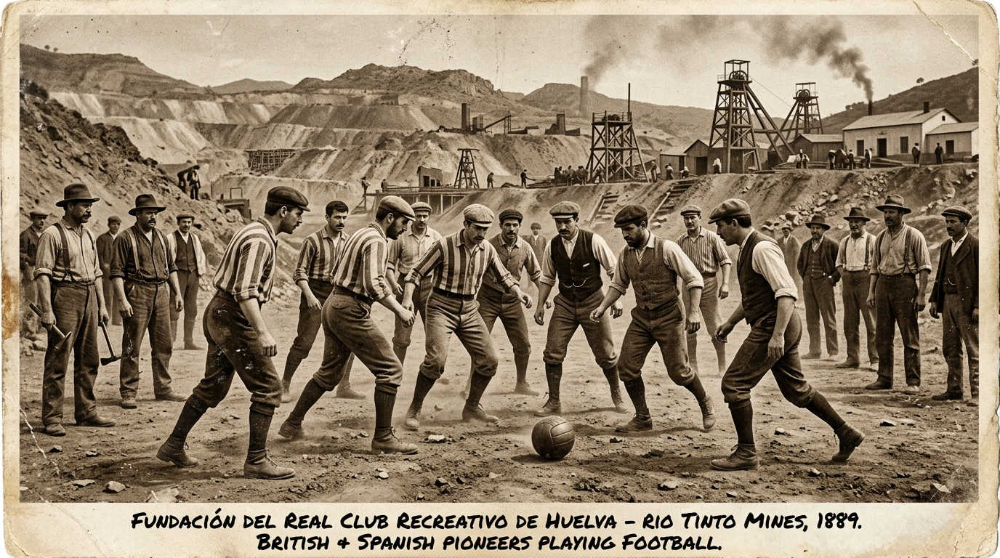
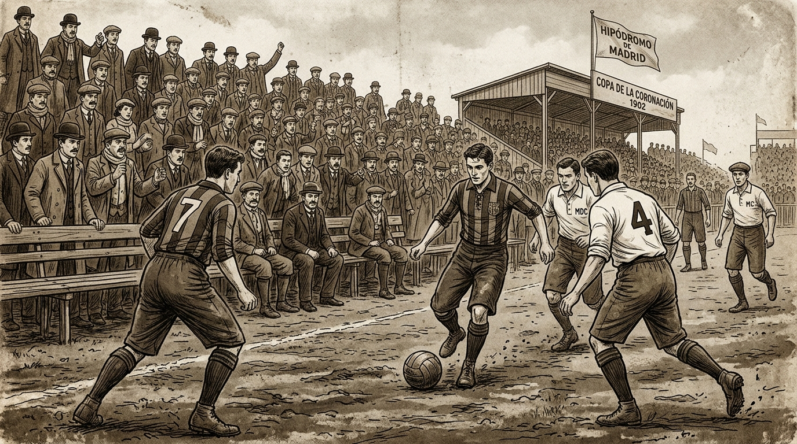
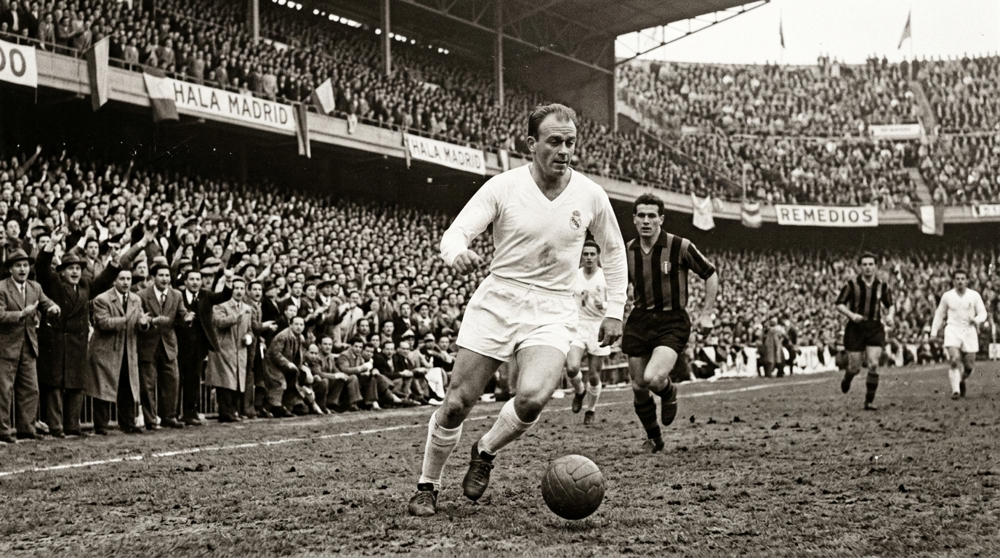
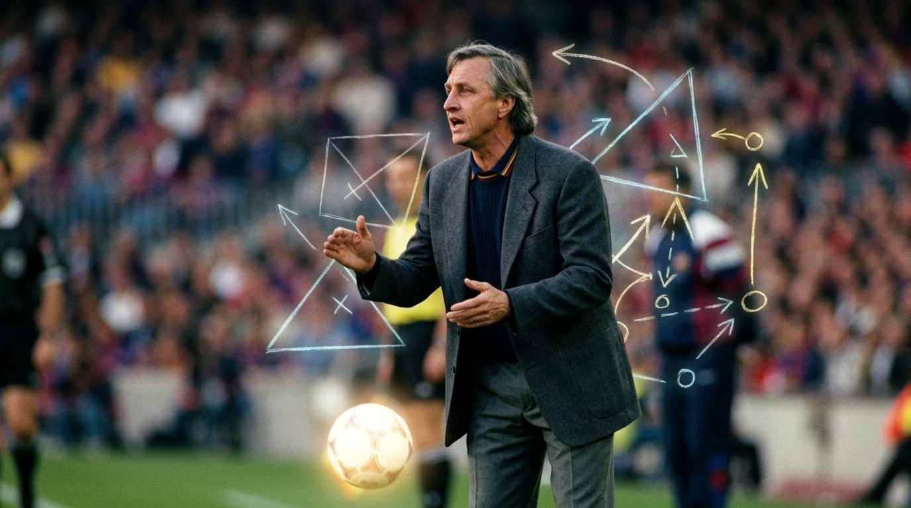
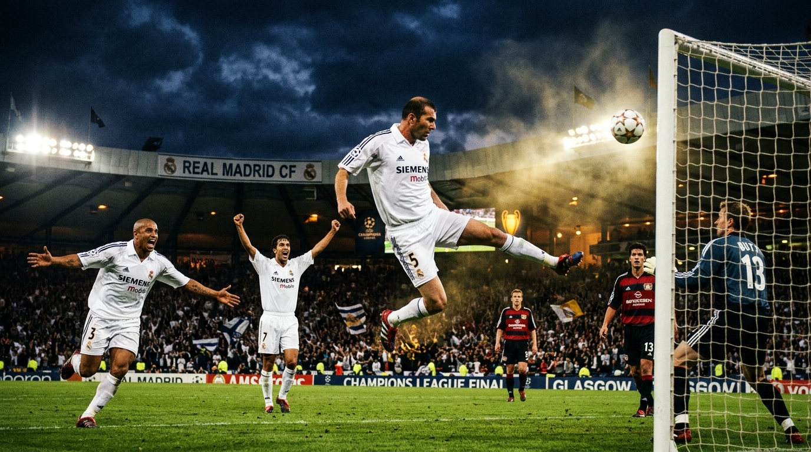
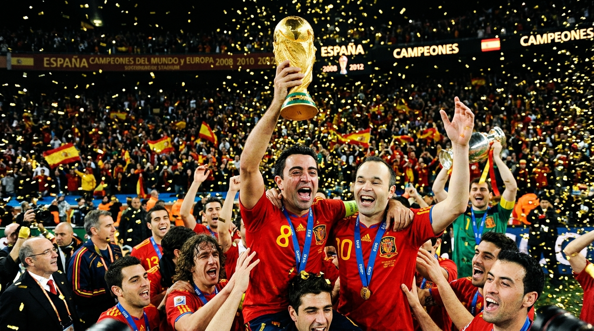
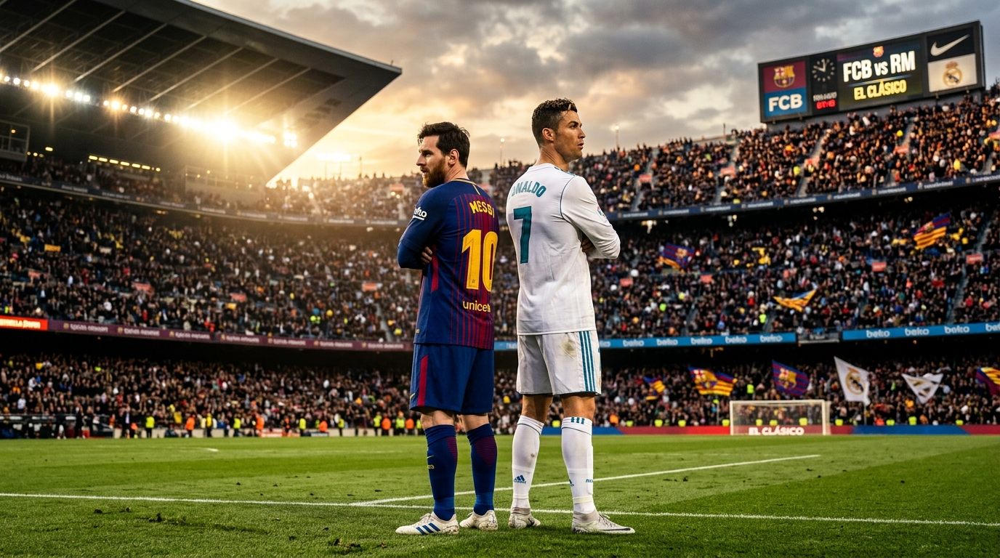
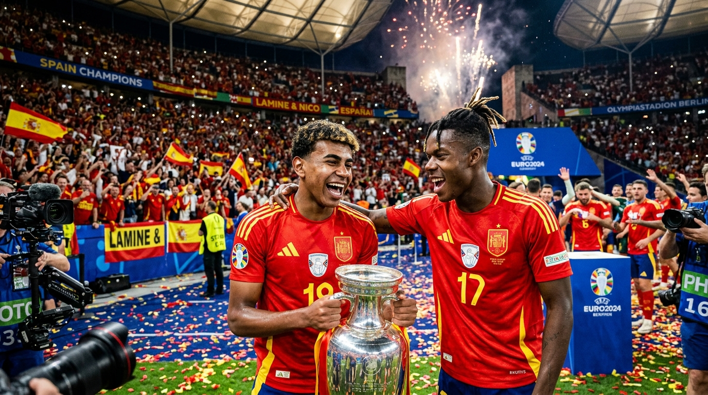

故事要從 19 世紀末英國工程師遠渡重洋踏上伊比利半島的紅土說起——從安達盧西亞力拓礦工立起兩根木樁踢球，到兩支相隔 600 公里的豪門演變為舉世矚目的「國家 Derby」。這場綠茵對決如何背負了加泰隆尼亞的自治吶喊、中央政權的榮耀意志，並最終催生出征服世界的「傳控足球」與「歐冠15冠王朝」？
取材自【0基礎看足球之西甲篇·上】《巴薩vs皇馬，為什麼被稱為國家 Derby？》。本頁面將影片中的核心文化矛盾向上引申，完整展開西班牙足球百年間的歷史脈絡與競技哲學。
觀看原始影片 ↗不重複的歷史節點還原，從 1889 年礦坑開球到 2024 年青春稱霸，完整還原西班牙足球發展足跡。

英國工程師在安達盧西亞泥地上開球，西班牙首家足球俱樂部誕生。

首屆加冕盃準決賽紳士們長袖短褲在馬德里較量，巴薩 3-1 皇馬前身。

「金箭」加盟引發轉會爭端，率皇馬包攬前五屆歐洲冠軍盃建立霸權。

荷蘭教父反抗獨裁、重構拉瑪西亞，1992 首奪歐冠奠定傳控哲學。

一年一巨星挖角菲戈引發豬頭門，齊達內在格拉斯哥轟出世紀凌空。

哈維與卡西利亞斯化解恩怨，Tiki-Taka 稱霸世界，首開男足三連冠。

當世兩大球王十年正面對抗，宇宙隊大戰鐵血反擊，商業競技天花板。

17 歲天才橫空出世奪得第四座歐國盃，西班牙足球開啟下一輪盛世。
在傳統足球語境裡，「Derby」特指同城死敵（如馬德里 Derby、米蘭 Derby）。然而巴薩與皇馬的交鋒卻超脫了地理疆界，被冠以「國家 Derby」（El Clásico）。
馬德里與巴塞隆納相距逾 600 公里，但兩家俱樂部囊括了西甲超過三分之二的聯賽冠軍與最多的球迷基數。這場對抗是西班牙體壇最高水準的天花板，媒體與社會共識將其昇華為「整個國家的世紀碰撞」。
💡 地理上非同城，精神上卻是國家最高象徵皇家馬德里座落於西班牙首都，歷史上常被視為卡斯提亞中央體制與西班牙整體團結的代表；而巴塞隆納則是加泰隆尼亞文化、語言與獨立自治精神的旗幟，球場成為不能公開反抗時最澎湃的政治宣洩口。
💡 諾坎普座右銘：「不只是一家俱樂部」在佛朗哥將軍長達數十年的獨裁統治下，加泰隆尼亞文化遭受強烈壓制。1943 年「大元帥盃」準決賽，首回合 3-0 領先的巴薩在馬德里客場遭遇軍警恐嚇與威脅，最終以 1-11 慘敗，成為兩家球會永世難解的歷史傷痕。
💡 綠茵場上的政治干預與歷史陰影點擊篩選標籤，沉浸式回顧從 1889 年礦坑開球到 2024 年稱霸的各階段獨家歷史紀實。
西班牙足球的強大不僅在於球星，更在於它深刻影響了現代足球戰術革命的思考維度。
由克魯伊夫奠定基礎、瓜迪奧拉發揚光大，並由西班牙國家隊演繹至巔峰。核心理念是「足球只有一顆，只要我們控球，對手就無法進球」。
皇馬不拘泥於單一僵化的戰術教條，而是追求極致的高效、快速轉換與大心臟關鍵球能力。在歐洲頂級賽場上，他們展現了無與倫比的逆風韌性。
歷史上西班牙國家隊常因馬德里與加泰隆尼亞的隔閡內訌而被譏諷為「預選賽之王、正賽軟腳蝦」。直到卡西利亞斯與哈維等領袖打破壁壘，方成就了 2008-2012 年的大賽三連冠偉業。
百餘年來超過 250 場正式比賽的相殺，雙方的總勝場數咬得難解難分，堪稱世界足壇最勢均力敵的終極較量。
| 👑 皇家馬德里 | 統計項目 | 💙❤️ 巴塞隆納 |
|---|---|---|
| 105+ 勝 | 正式比賽國家 Derby 勝場 | 100+ 勝 |
| 15 座 (歷史第一) | 歐洲冠軍聯賽 (UCL) 冠軍 | 5 座 |
| 36 次 (歷史第一) | 西甲聯賽冠軍 (La Liga) | 27 次 |
| 20 次 | 西班牙國王盃冠軍 (Copa del Rey) | 31 次 (歷史第一) |
| C 羅 (18球) / 迪斯蒂法諾 (18球) | Derby 射手王 | 梅西 (26球，歷史第一) |
回答 3 個關於足球哲學的二選一問題，找出你潛意識中的主隊歸屬感！